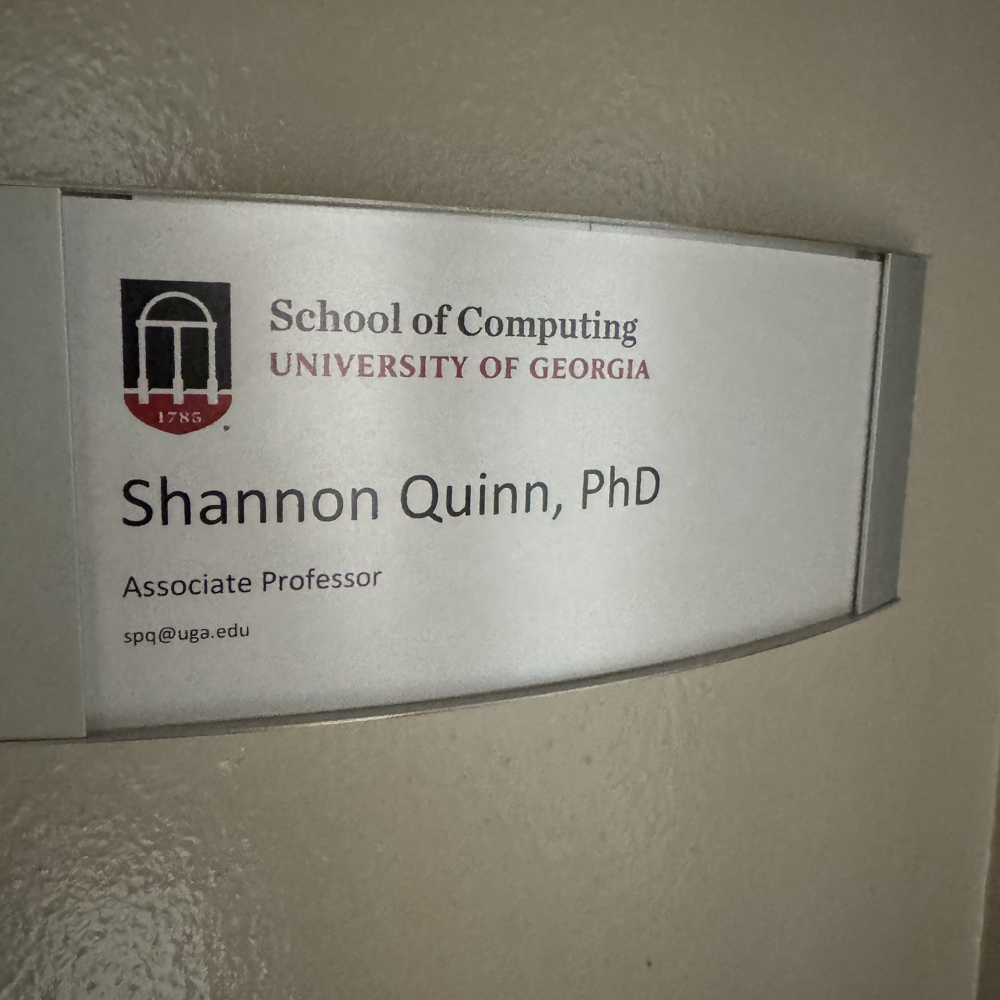
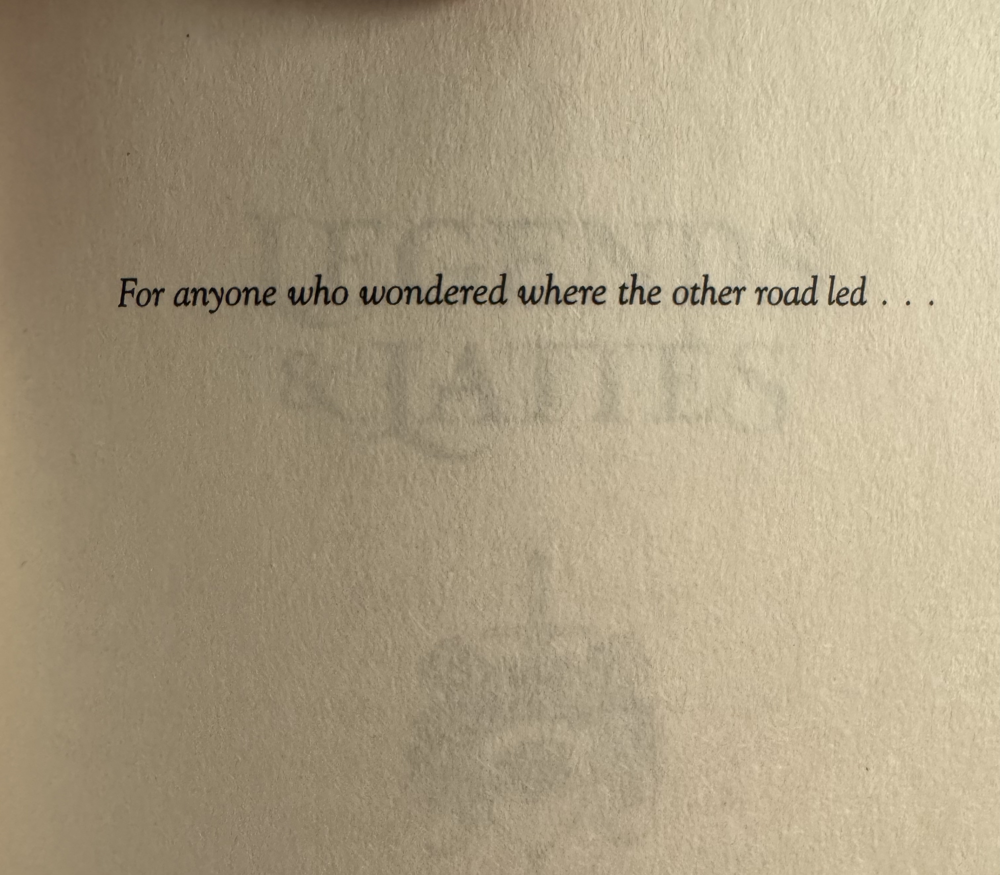
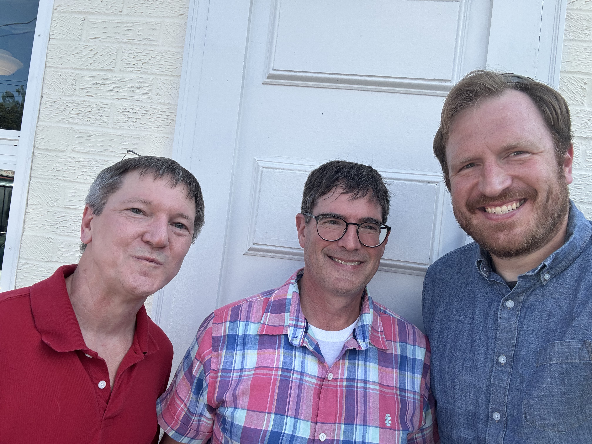
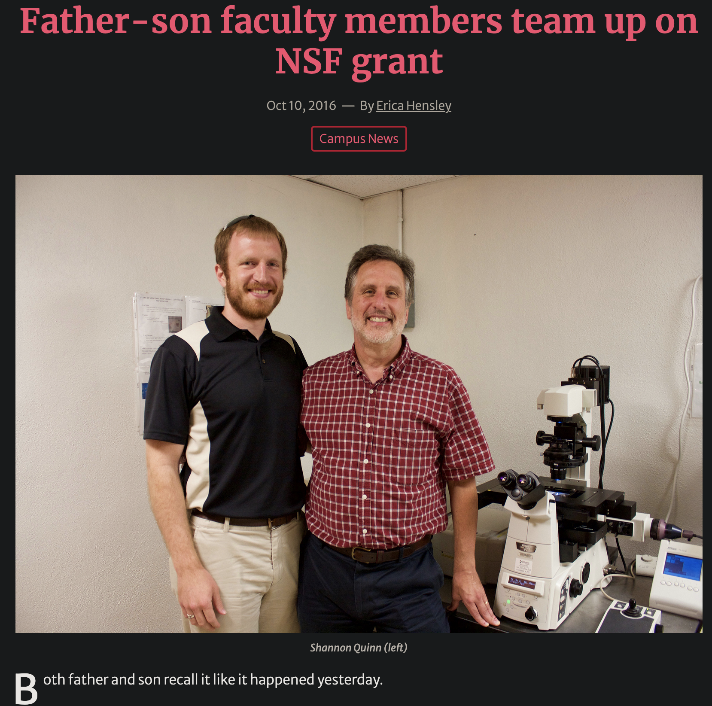
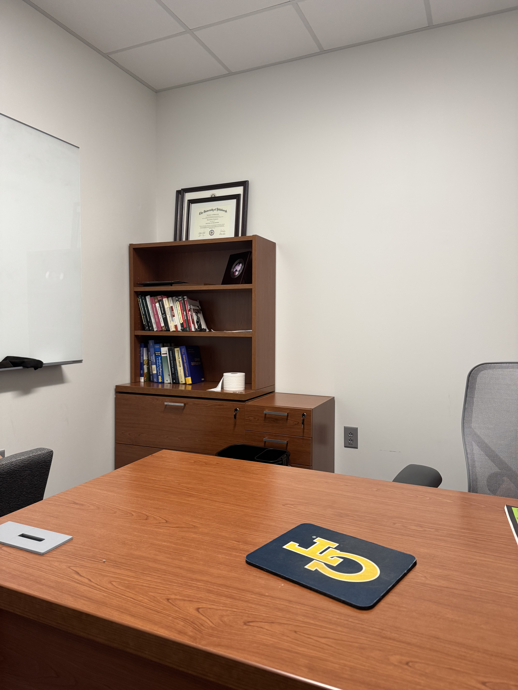
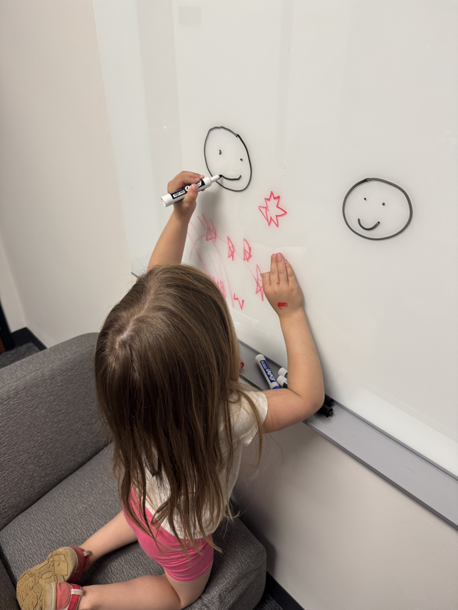
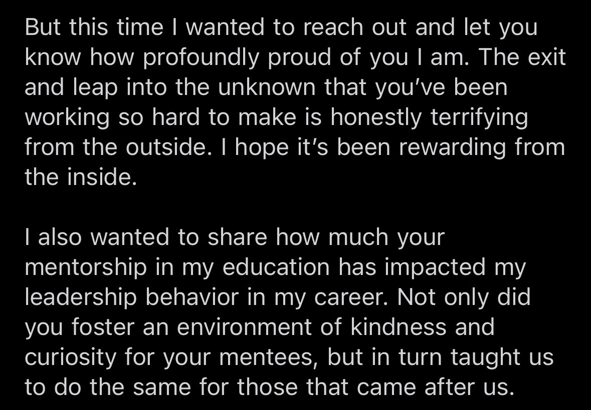
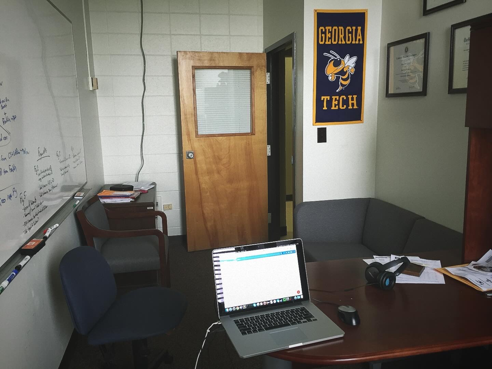
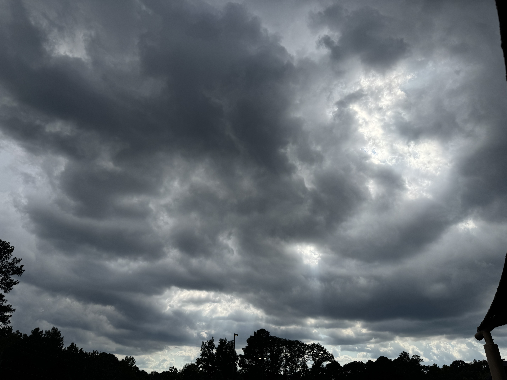

The Mid-Aughts
I still remember it vividly. I was in Cleveland, Ohio, driving to or from something wedding related, as it was April 4, 2014—the day before Cathryn and I got married. I had my phone on me, and like it did a lot that weekend, it started ringing. But it was a 706 number I didn’t recognize. Uncharacteristically, I pulled off into a parking lot (normally I just let calls roll to voicemail… even when I’m just sitting at home1) and answered. It was none other than the Computer Science department head at UGA, offering me the job of Assistant Professor with joint appointments in Computer Science and Cellular Biology!
I don’t remember exactly when I told Cathryn the news (it was sometime over the wedding weekend), but I do remember that, at the time, I told the department head I needed a week to consider it, as I was literally about to get married and was then immediately jetting off to an island without cell service for my honeymoon. Suffice to say I accepted, but that made for an added element of excitement to an already electrified weekend.
Present Day
Why then, over a decade and tenure later, did I leave UGA? Well, a lot of reasons. But that’s not the point here.
Sometime during the 2020 pandemic lockdowns, I opened a blank Markdown file and began writing a document that I steadily added to over the intervening years, cataloging and distilling the various reasons that I felt academia and I were not long for this world. In reading over it again for the millionth time, I’m left with this strange feeling of simultaneous inevitability and happenstance: a sort of causal superposition.
On one hand: of course I left, holy see you later Batman. On the other hand, it’s not difficult to envision permutations of universes in which I stayed; some of these universes differ from our own by a single grant decision, a single job offer, even a single day with one less fire to put out.
This post isn’t about why I left UGA2. It is a collection of complicated thoughts and feelings as I begin the process of closing the door on a place that has profoundly influenced the direction of every single aspect of my life. I hope you, dear reader, find some useful nugget here to take with you, but I want to be painfully blunt up front: this post is, first and foremost, for me.

What I’ll miss
At the risk of sounding trite, it’s not what I’ll miss, but who: the people. The people are the part of UGA I will miss the most, hands down. One can’t count on an institution to always have your back, but people are another story. In no particular ordering:
My Lilly Fellows cohort, and my Lilly mentor. They stoked not only my interest in teaching, but were also lovely, well-rounded people. Some became writing buddies, others gave us advice for our 2019 Ireland trip.
The Cellular Biology department heads, past and present: Kojo, Mark, Dennis, and Jim. Multiple longtime collaborators I met through Cellular Biology: Karl, Jonathan, Silvia, and Rachel. This department came about as close as possible to making me believe that whole institutions will stick by you through thick and thin, because this one sure did: from Kojo intervening on my behalf with regards to teaching assignments; Jim taking me out to lunch to discuss grant proposal strategies; all of the above clearly whipping votes in the department’s tenure discussion. I will deeply miss Karl’s sense of humor, Jonathan’s warm and even-keeled presence, and Rachel and Silvia’s fascinating research questions.

The Institute of Bioinformatics leadership, Travis and Holly, who took a giant risk on me in multiple ways. They are incredible leaders with a laser-focused vision for the unit and more than enough talent to execute. They singlehandedly restored my belief that we don’t necessarily always rise to the level of our incompetence; sometimes we actually reach exactly where we’re meant to be, where we can do the most good. And they’re just wonderful people to boot.

My research collaborators: Kyle, Russ, Nicole, Meredith, Ginger, Jason, and Michael. Lots of other folks who were at UGA but left before I did (usually to go to another university).
Other faculty and staff I interacted regularly with, officially or unofficially: Carl, Brad, Mica, Kimberly, Evette, and Sandra. Special shoutout to my “work wife” Ari Schlesinger, who only started at UGA in the fall of 2023, but with whom I forged a quick friendship thanks to our common background. I tried to be the resource for her that I wish I’d had at that career stage. She’s since become a close friend of both mine and Cathryn’s (and Z really loves her too!) so I’m optimistic we’ll stay in touch.
But if you’re a prospective student and remotely interested in her work, reach out to her—I can’t think of a line of CS research inquiry more relevant or important right now!).
An uncountable number of students, but this page is a good place to start.
But most of all, and above all, I’ll miss working with my Dad.

My Dad has always been a bit of a personal and professional hero of mine, and it’s no stretch to say that my journey into the tenure-track was at least slightly because of him. Getting not one, but two federal grants with him—an NSF grant in 2015 (I was a co-PI), and an NIH grant in 2021 (I was the lead PI!)—is something I’ll cherish forever. I still hold out hope that, as I grow in my new role, I’ll be able to cultivate new opportunities for external collaboration that might include my Dad.
I guess there is one “what” that I’ll miss: I’ll miss that STEM building office that I had for all of four months. At least at time of writing, it’s one of the newest buildings at UGA, and so the office itself (while nothing special) was just lovely. I even had a few opportunities to bring Z there a couple of summer days when we needed to kill some time, and she loved it.



What I’m proud of
To pick up from the previous section: my Dad and I got a handful of publications with both our names on them. Together with the two grants, and I think that’s pretty effing awesome.
I got a coveted NSF CAREER award. That got me tenure, and was among the first times I could recall being paid to work on something that I had created, that I was super excited about, and which I really believed in.
I published in Science, KDD, ISBI (twice!), and even places like JOSS that aren’t high-impact in the traditional sense but are—or so I believe—incredibly valuable outlets that help make more parts of modern academia sustainable.
I was the chief architect of an entire undergraduate curriculum. I’m personally not a fan of the direction it’s gone since launch, but I was really proud of the idea in principle and did my best to get it there.
Along those lines, I’m really proud of all the digital classroom materials I created for all the courses I taught. Which reminds me: there are private “master” repos with things like autograders, assignment keys, and other notes that I should perhaps make visible?
Around the same time I got my NSF CAREER, I also won a Lilly Teaching fellowship, a departmental teaching award, and a university research award.
I received (and still receive) messages like this one:

and I’ve lost count of the automated UGA emails to the effect of “a student from this semester’s graduating class identified you as someone who had an outsized impact on their development”, which is just so incredibly humbling and affirming.
Speaking of students, I’m immensely proud of everything they accomplished, especially given the circumstances under which many of them worked. Everyone’s situation is different, but the default situation of a student is difficult: especially graduate students, especially international students, especially students supporting themselves and/or another person, especially part-time students, especially non-traditional students, especially minority students or otherwise underprivileged students. And that’s just the baseline, the default, standard operating procedure if nothing goes wrong; at least a handful of my students were not so lucky. But they worked around those problems, too. I watched as students with minimal or even zero background in computing finish up as experts in their areas by the time they left; there is no single greater reward to a mentor.
Publications, posters, conference talks, DOIs, awards; they’re all nice, great even. But for me, I’m proudest when I see that light go on in a student’s brain, and they transition from asking me “what do I do next” to telling me “here’s what I think we should do next”.
We did some great work too, which admittedly I’ll miss (so I guess this should go in the previous section, at least in part) but which I’m also proud of. I spent over a decade working on analyzing ciliary motion, and loved it. It was my first-ever research project, and also my last (the NSF CAREER funded it). In addition, I worked with my Dad on studying the effects of tuberculosis on the mitochondria of lung cells (NSF and NIH grants); I also developed tracking and analysis methods to understand how toxoplasma parasites invade host cells (collaborator on an NIH grant). A project I was really excited for was to conduct a pilot study on how to introduce Open Science tools and techniques into graduate education; we even got an NSF grant for this work!
I’m very proud of the Open Science in Big Data workshop I ran for four consecutive years in conjunction with the annual IEEE BigData Conference; for four years, I pulled that off pretty much single-handedly. It gave me an excuse to invite some of my professional heroes to give keynote talks, and as a result I’m still in contact with a few of them, and a few I consider friends.
There were myriad other projects that were one-offs, or which never quite panned out, but which contributed to my overall portfolio in some way, and for which I am grateful.
What I started (but didn’t finish)
To a certain extent, everything I worked on in my 10+ years at UGA would fall in this category. It’s a blessing and a curse of academia: the work is never truly done. But here are just a few that stick out to me.
By any metric, my NSF CAREER project was a rousing success, except for one stated objective: I was never able to fully reveal quantitative definitions for previously-unknown ciliary motion phenotypes, nor was I able to observe whether these phenotypes provided any insights into the specific underlying pathologies. Imagine: diagnosing ciliopathies by simply watching how cilia move! I really think the hypothesis is a good one, but I wasn’t able to close this circle, mostly due to a combination of 1) lack of data that was high enough resolution, and 2) just not enough time (the 2020 pandemic lockdowns landed right smack in the middle of this project, and shut down laboratories just as we were starting to purchase materials to conduct experiments; to say this was a huge freaking wrench in things would be an understatement).
Along those lines, I’d written a few versions of a draft NIH R01 that posited a connection between the SARS-CoV-2 virus, ciliary health, and the virus’ ability to invade lung cells. It was rejected twice, but the third submission would have been a major overhaul, one which I think would have been extremely competitive: it brought in some of my spatial biology experience from my 2024 sabbatical with PredxBio. The program officers at NIH who read it loved it. It was a genuinely exciting project, taking and building on work I was intimately familiar with and moving it in a new direction. Work on this R01 proposal even dovetailed into some semi-serious conversations with the dean of UGA’s fledgling medical school about creating a brand new research institute focused on spatial biology in medicine and collaborations with industry. I’ve no doubt someone will pick up these ideas and run with them, but I’ll always be curious as to how they would’ve turned out had I been the one to execute.
I also feel as though we weren’t able to get out of the prototype stage in the collaboration with my Dad. The reasons for this are complicated (read: the source of a great deal of acute anger3), but suffice to say we were dramatically and unexpectedly under-resourced. We did the best we could with what we had and still accomplished some fascinating things. But we’d hoped to use what we built to scale up into a full genome screen of the tuberculosis pathogen and identify genes that contributed to its ability to shut down host cell defenses. Sadly, we never reached that point. Nevertheless, we accomplished enough that, again, I’ve no doubt someone will pick up the pieces and run with them.
The 2020 pandemic and subsequent lockdowns changed a lot, and projects-in-progress were no exception. A big casualty was that NSF project on Open Science in graduate education: we’d planned, submitted a proposal, and received funding to 1) recruit a variety of graduate students into our cohort, 2) organize multiple activities and workshops each year, and 3) collaborate with folks at CyVerse, The Carpentries, and even cohorts at UNC Chapel Hill and Penn State. Very little of that actually happened, as in-person arrangements were pretty much a non-starter for an entire calendar year: the lockdowns began in March, and this project was officially awarded the very next month in April. We did the best we could in subsequent years, but it was a shadow of what we’d originally hoped for it to be.
I have an entire section at the end of my academic CV dedicated to opportunities that were canceled due to COVID. A really big one: I was offered a 1-year role at NIH in their “Data Scholar” cohort. I had to turn it down; I won’t go into specifics, but suffice to say COVID killed this 2020/2021 opportunity to take an immediate sabbatical and work on something fascinating. Who knows how my trajectory may have shifted.
A very recent unfinished task was the design and proposal of a brand-new undergraduate degree: “Applied Computational Sciences.” This was pretty much the first thing IOB wanted me to tackle in moving to their unit, given my experience with building the BS in Data Science. Granted, in that previous role, I was merely a single committee member (even though I personally authored most of what was approved); this time, though, I was the actual Chair and lead of the initiative. I was incredibly excited, not just because I love anything interdisciplinary, but also because I saw this as a chance to actually do what I’d originally hoped for Data Science to be: a truly interdisciplinary computing degree that teaches the domain first and the tools second. But I left before I could finish the preliminary groundwork and data gathering required of new degree proposals.
Teaching in general felt very unfinished. As part of my Lilly fellowship, I’d hoped to convert all my classes to a flipped, ungraded format. That… didn’t happen. Partly because the pandemic crashed down very shortly after my fellowship, but also because I simply had too much teaching; surviving trumped thriving.

What I’d hoped (and still hope)
While he was interviewing me, my now-supervisor mentioned that he was intrigued by the professional goals on my resume. To paraphrase, they more or less amount to: “I love building things, I love building useful things for real people, and I love growing.” Those, in a nutshell, are what I’d hoped for at UGA. And, to be completely fair, I did a good amount of all three.
I also believe I’ve gotten most of what I can out of UGA, so the path to continuing to do these things is elsewhere.
But there are still plenty of meaningful and important and critical things to be done at UGA, and universities everywhere. They need serious, thoughtful people to do them. It is my sincerest hope that these institutions, and the people who make them what they are, continue to grow and develop their strengths and talents in the best interest of the greater collective humanity.
Three people
I don’t remember now where I came across this, but it struck me at the time as important enough to write down:
List 3 people that got you where you are today in your career. Then, list 3 people where you may have been that person for them.
For the first part, this is easy:
- My Dad. He’s been one of my role models for decades; in this case, someone I got to talk science with (both informally, and on actual projects), and who also helped me navigate the trenches of tenure track at UGA. I wouldn’t have even known what questions to ask or to whom without him.
- Merrick Furst, a professor at Georgia Tech. He’s been a mentor and friend ever since he and I were on the same summer 2007 study abroad in Barcelona, Spain. His experiences with and insights into the overlap of industry and academia really helped me to cut through the crap when it came to figuring out what I wanted.
- Chakra Chennubhotla, my PhD advisor and the co-founder of PredxBio. He created an incredibly rich environment for me to work as a graduate student, encouraging my interests and keeping me engaged through sheer joy. At PredxBio, he built a company that was my most enjoyable work experience in a decade.
I truly do not know where my career would be, or what kind of person I would be, without any one of these individuals. I certainly would never have even had the opportunity to work for UGA, or anything that has since followed.
As for the second part, I’m not going to speculate publicly. But I’d like to think I’ve been that person for at least one of my former students; that’s the singular joy of any faculty.



“What’s next?”
On a meta note: the precise timing of this blog post isn’t coincidental. As of today, I’ve 1) fully paid off my student loans that I started taking for grad school in 2008 and which topped out at over $100k4, and 2) submitted the final, closing report for my NSF CAREER grant, officially the last UGA and academic obligation I had remaining. So this post really is “the end.”
In case there are any West Wing fans here:
Will I ever come back to UGA, or academia in general? I don’t know! I do already have a guest speaker talk scheduled at UGA for Monday, October 13: I’ll be talking to a group of undergraduate neuroscience students about career paths! So I suppose, in some sense, I’ll be returning shortly! If only for an hour :)
Would I ever come back? I don’t know that, either. I do know that I am loving my current role with Valo and don’t foresee making any changes for some time; the rhythms and routines of this new position are exactly what I need, and the environment is precisely what I was looking for when I listed out those objectives in my resume.
So! With all that, I’d simply like to say: thank you for 10+ years, UGA. Here’s where we part ways, but hopefully we’re both leaving richer and more fulfilled for having spent that time together. I know I am.

Footnotes
Like Maynard said: “I used to have a phone, but people kept ringing me!”↩︎
Insofar as it won’t be, colloquially, an “airing of grievances.”↩︎
I don’t want to sully this post with perceived slights, so if you’re curious feel free to ask.↩︎
There’s a slight caveat here: I should have been eligible for roughly $15k of that to be forgiven through the PSLF program. Of course I didn’t get my act together soon enough, and the, ah, current administration disqualified me on a technicality. So I just paid the fucker off. Bootstraps and all that, isn’t that right?↩︎
Citation
@online{quinn2025,
author = {Quinn, Shannon},
title = {An {Ode} to {UGA}},
date = {2025-10-01},
url = {https://magsol.github.io/2025-10-01-an-ode-to-uga},
langid = {en}
}